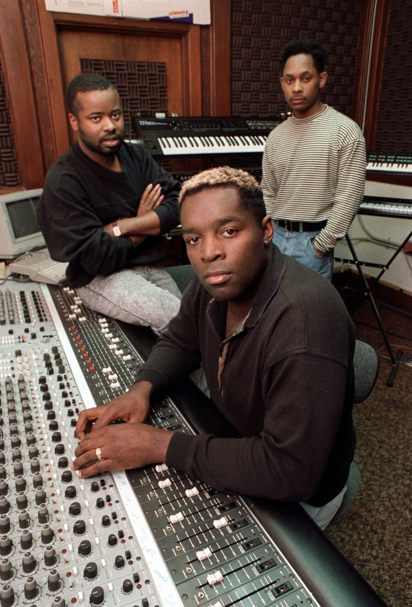

House en techno sinds de jaren 80
Chicago
In de underground van Chicago ontstond in de jaren 80 een radicaal nieuw geluid: house music. Het is het begin van een totale muzikale revolutie. "In the beginning there was Jack and Jack had a groove". Deze zin is bekend bij iedereen die weleens naar een Housefeestje is geweest. De legendarische acapella die de grondbeginselen van de housemuziek uitlegt, bezorgt iedere oprechte raver kippenvel. Dj Frankie Knuckles opent in een oude loods club The Warehouse. Het publiek is gay & black, net als Knuckles zelf. The Warehouse is een veilige haven voor deze minderheidsgroep, hier kan iedereen zichzelf zijn. Het leidt tot wilde, extatische taferelen. De underground is geboren, een plek voor iedereen die zich anders voelt en elkaar accepteert zoals hij/zij/het is. In de maatschappij is er nog weinig acceptatie voor minderheidsgroepen in reguliere bars en clubs, om die reden ontstaat er een veilige haven voor gays, latino's, zwarten en andere minderheden. Halverwege de jaren tachtig is Frankie Knuckles ontevreden over het aanbod aan nieuwe discoplaten. Daarom bewerkt hij oude platen door te knippen, mixen en de instrumentale stukken te verlengen. Dit unieke geluid met een constant repeterende kickdrum - wordt razend populair. Van ver buiten Chicago komen mensen naar The Warehouse, door het publiek wordt het the house genoemd. In de platenwinkels vragen mensen naar de muziek die The Warehouse gespeeld en zo ontstond de term house. De groep Phuture maakt in 1987 met Acid Tracks de meest bizarre, spacy housetrack tot op dat moment. Een nieuw subgenre is geboren: acid house. Een jaar later slaat de acid house over naar Engeland, de stijl wordt met name in Londen en Manchester een groot succes.
Detroit
Detroit was lang de futuristische metropool van Noord-Amerika, maar begon eind jaren 70′ zijn glans te verliezen. De industriële krachtpatser, ooit beroemd om zijn enorme autofabrieken, was niet meer. De jeugd snakte naar ontsnapping – en de clubcultuur bood precies dat. Gerund door burgemeester Coleman Young, werd Detroit eind jaren ’70 en begin ’80 overspoeld met enorme discofeesten en after-hours clubs met een ruimdenkend muziekbeleid. Tieners in Detroit beginnen synthesizers en de elektronische ritmische innovaties van de drummachine te omarmen en de eerste ‘techno’ was geboren. DJ Juan Atkins introduceerde het woord ‘techno’ in de muziekwereld en wordt gezien als de originator. Techno onstond uit een mix van Funk, Chicago House-muziek, New York-disco, Duitse Synth-pop, Italo-disco, Motown, Jazz en Soul.
Geïnspireerd door de Europese (veelal Duitse) elektronische sounds en de house-dj’s uit Chicago, gecombineerd met de ontwikkelingen die de industriële stad. Detroit meemaakte, ontstond een nieuwe sound die vandaag de dag bekend staat als de basis voor techno-muziek; de Detroit techno. Een geluid wat Derrick May ooit omschreef als: “like George Clinton and Kraftwerk stuck in an elevator with nothing but a sequencer to keep them occupied”. The Belleville Three werd sterk beïnvloed door de wekelijkse radioshow ‘Midnight Funk Association’. Dit radioprogramma liet vanaf 1977 de elektronische muziek horen van elektronicapioniers als Kraftwerk, Tangerine Dream en Yellow Magic Orchestra, gecombineerd met de funk invloeden van Parliament Funkadelic en George Clinton. Het radioprogramma was juist populair omdat het, in tegenstelling tot andere radiostations, niet overging naar de commerciële sound van disco die toen populair was (Bogdanov, 2001). Naast de samensmelting van verschillende muziekstijlen is ook de invloed van fictionele en futuristische thema’s relevant geweest voor de opkomst van techno-muziek binnen de Amerikaanse kapitalistische samenleving.
New York
In 1983 veranderde er veel in de muziekwereld van New York. Disco was in New York ontstaan en dat veranderde naar Boogie. De komst van drummachines en nieuwe synthesizers in plaats van grote muzikale partijen sloeg een nieuwe weg in. De Paradise Garage en de Loft waren de clubs waar de nieuwe hitsen ontstonden. De resident van de Paradise Garage, Larry Levan, was een van de invloedrijkste dj’s in New York. Met zijn producties voor vele artiesten zorgde hij voor een kenmerkende soulful Garage sound.